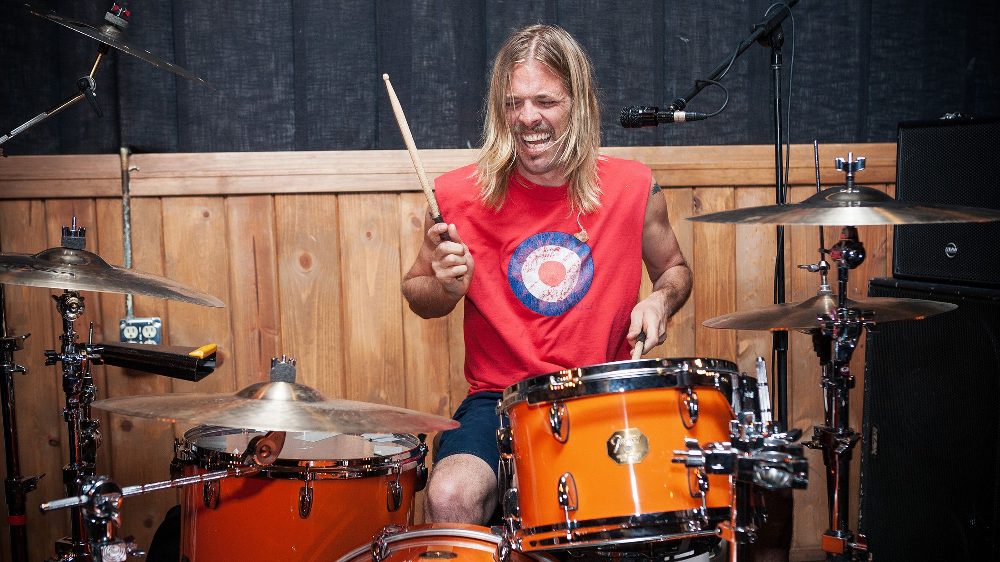
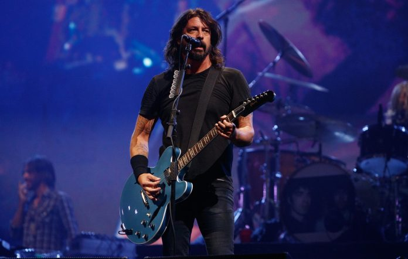
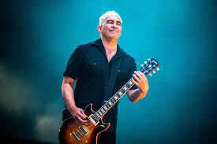
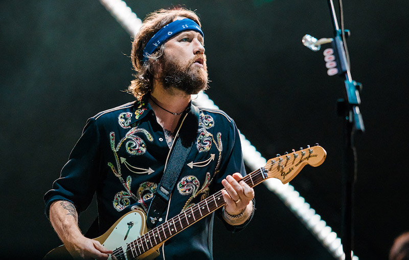
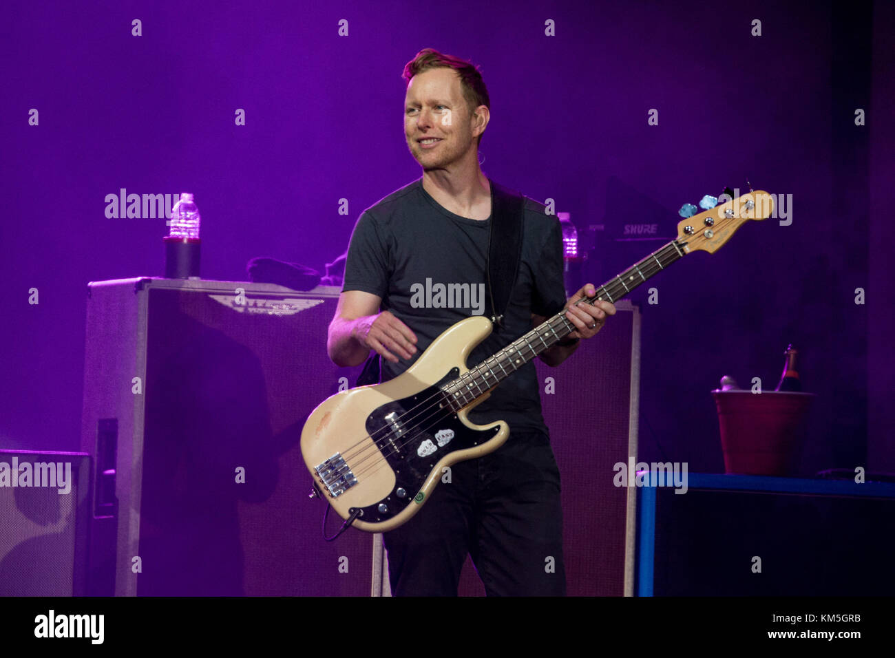
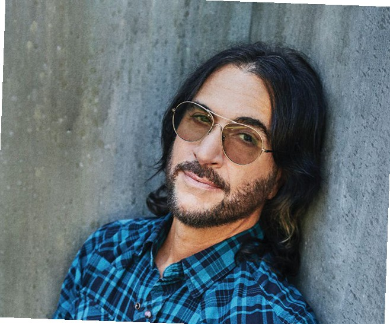
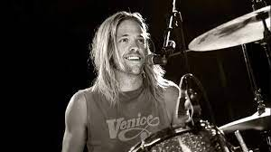

Foo Fighters
Descripción:
Foo Fighters es una banda de rock estadounidense formada en Seattle en 1994. Foo Fighters se formó inicialmente como un proyecto de un solo hombre por el ex baterista de Nirvana, Dave Grohl.
La primera canción que escuche de Foo Fighters fue "The Pretender".
Mi primera reacción ante esa canción fue como "Wow, realmente su música es fuerte",
Sin duda no me arrepiento de haberlos conocido, tienen un gran repertorio de música,
desde canciones algo relajadas hasta canciones algo pesadas.
Taylor Hawkins

Baterista
Dave Grohl

Vocalista y Guitarrista
Pat Smear

Guitarrista Ritmico
Chris Shiflett

Guitarrista Lider
Nate Mendel

Bajista
Rami Jaffee

Organista
Mis canciones favoritas de Foo Fighters son:
- The Pretender
- Everlong
- Breakout
- Rope
- Walk
- Long Road to Ruin
Foo Fighters es una muy buena banda, y desde sus inicios era bastante reconocida por el ex-baterista de Nirvana
(Dave Grohl).
La muerte de Taylor Hawkins ha sido un golpe muy fuerte para la banda y aún mas para Dave Grohl ya que eran casi como hermanos de sangre,
pero aún asi la banda está saliendo adelante con la ayuda de todos nosostros, sus fans.
El mejor baterista del Rock❤️

R.I.P - Taylor Hawkinks febrero-17-1972 - marzo-25-2022⚰️